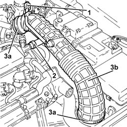

1048A59 PIPE from flow meter to throttle casing hose - R.R.
- Path
- Procedures > 10 ENGINE UNIT > 1048 ENGINE AIR SUPPLY CIRCUIT > 1048A VACUUM AIR CIRCUIT > 1048A59 PIPE from flow meter to throttle casing hose - R.R.
- Kind
- repair procedure (removal / refitting; the operation number is the code)
- Applies to
- engines: 2.0 JTS; all production periods
- Interactive page
- https://sloeber94.github.io/elrnDB-aGt/en/#/125001021
Applies to: engines: 2.0 JTS; all production periods
 Removing
Removing
 Refitting
RefittingProceed with removal
Op. 1016A40 IGNITION COIL COVER ON CYLINDER HEAD- R+R
1. Disconnect the rapid connector for the vacuum intake pipe, pipe side from the flow meter to the throttle casing.
2. Loosen the band for the engine oil vapour recovery pipe.
3. Loosen the bands (3a) and remove the pipe from the flow meter to the throttle casing (3b).

Applies to: engines: 2.0 JTS; all production periods
Refitting
RemovingPlace the pipe from the flow meter to the throttle casing back in its housing and secure it using the bands.
Tighten the band for the engine oil vapour recovery pipe.
Connect the rapid connector for the vacuum intake pipe, pipe side from the flow meter to the throttle casing.
Proceed with refitting
Topics linked from this page (1)
Topics that link to this page (35)
- 0010T48 HYDRAULIC SYSTEM FOR GEARBOX WITH HYDRAULIC SELECTION BLEED AIR
- 0010T62 POWER STEERING FLUID CHECK LEVEL AND TOP UP IF NECESSARY
- 0010T67 HYDRAULIC CLUTCH SYSTEM BLEED AIR
- 1004B10 POWER UNIT WITH MANUAL GEARBOX - R + R
- 1004B24 POWER UNIT WITH MANUAL GEARBOX WITH HYDRAULIC SELECTION - R R
- 1020D36 FLYWHEEL END OIL SEAL - REPLACE FOR MANUAL GEARBOX WITH HYDRAULIC SELECTION VERSIONS
- 1020D38 FLYWHEEL SIDE OIL SEAL - REPLACE
- 1024B10 ENGINE FLYWHEEL - R + R FOR VERSIONS WITH MANUAL GEARBOX
- 1024B11 ENGINE FLYWHEEL - R R FOR MANUAL GEARBOX WITH HYDRAULIC SELECTION VERSIONS
- 1036C10 CAMSHAFT IN CYLINDER HEAD - R R ON VEHICLE
- 1048A10 AIR CLEANER FILTERING ELEMENT - REPLACE
- 1072B10 INLET MANIFOLD - R + R AND REPLACE SEAL
- 1072D10 MODULAR INLET MANIFOLD - R+R
- 1080E28 ENABLEMENT SOLENOID FOR FLOW OF FUEL VAPOUR TO INLET - R+R
- 1080E63 FUEL VAPOR HOSE BETWEEN RIGID PIPE AND CUT OFF SOLENOID R R
- 1084C10 STAFFA DI SUPPORTO DEL RADIATORE RAFFREDDAMENTO OLIO MOTORE - R.R.
- 1084C12 SCAMBIATORE DI CALORE OLIO MOTORE COMPLETO DEI TUBI DI ENTRATA E USCITA LIQUIDO DI RAFFREDDAMENTO - S.R.
- 1088C40 THERMOSTAT- R + R
- 1088D10 LOWER SLEEVE FOR COOLANT OUTLET FROM RADIATOR - R + R
- 1088D14 UPPER SLEEVE FOR COOLANT INLET TO RADIATOR - R + R
- 1088D24 RIGID PIPE FOR COOLANT INLET TO WATER PUMP - R + R
- 1810A20 CLUTCH - R + R
- 1810A28 CLUTCH - R R FOR MANUAL GEARBOX WITH HYDRAULIC SELECTION VERSIONS
- 1820A24 THRUST BEARING LINKAGE - R + R
- 1820B40 HOSE FROM CLUTCH RESERVOIR TO MASTER CYLINDER (PUMP) - R + R
- 1820B59 SMORZATORE DI VIBRAZIONI CIRCUITO IDRAULICO FRIZIONE CON TUBAZIONI ENTRATA E USCITA - S.R.
- 2110A10 MANUAL GEARBOX AND DIFFERENTIAL - R + R
- 2110A11 MANUAL GEARBOX WITH DIFFERENTIAL - R R FOR VERSIONS WITH HYDRAULIC SELECTION
- 2110C24 SEALS FOR GEARBOX INPUT SHAFT - R R FOR MANUAL GEARBOX WITH HYDRAULIC SELECTION VERSIONS
- 2125C70 GEARBOX/BRAKE LEVER MOUNT - R R
- 3330C30 BRAKE FLUID RESERVOIR - R + R AND WASH INSIDE
- 5530A10 ALTERNATOR - R+R
- 5530B10 BATTERY - R+R
- 5530B52 BATTERY DRIP TRAY/SUPPORT - R.R.
- 5530B60 BATTERY FASTENING BELT/RETAINERS - REPLACE